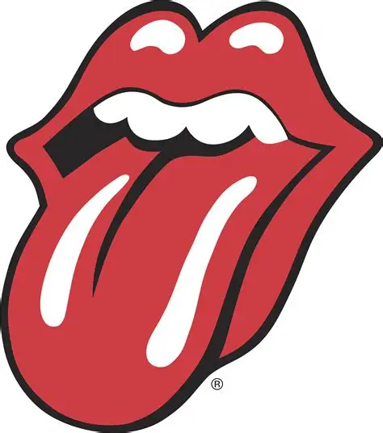
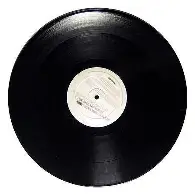

inicio
Veja curiosidades e lista de albums com mais copias vendidas da história!
3 curiosidades e lista com 12 albums disponíveis
clique aqui para conferir o que está sendo considerado
Você pode conferir os outros artigos clicando nas abas no topo da tela
com o botão "album" e "curiosidades"
Caso queira se apronfundar no assunto:
Clique aqui para abrir as informações do rolling stones

Veja abaixo oque sera considerado na pesquisa:
Dados usados são de vendas físicas e não virtuais
